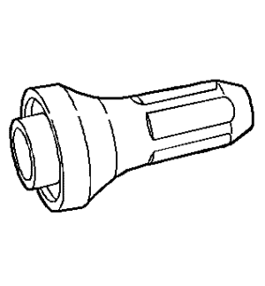
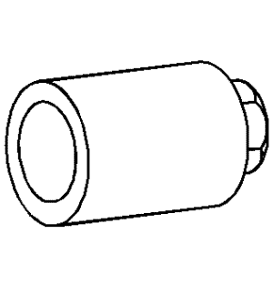
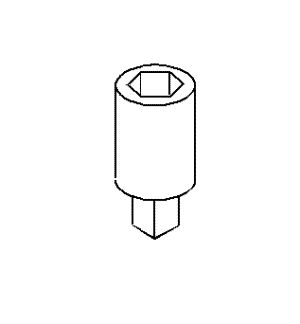
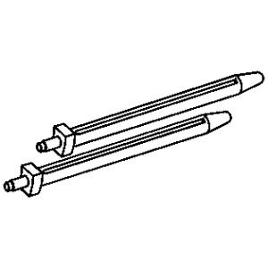
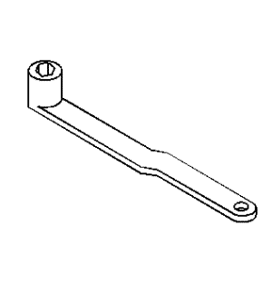
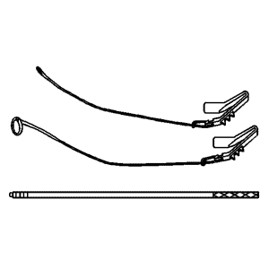
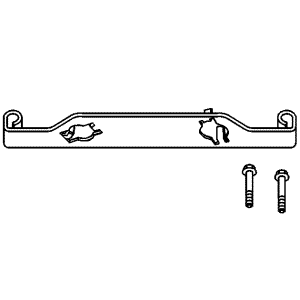

Captiva |
||||||||
|
|
|
|||||||
Ilustración | Nº de herramienta / Descripción |
|---|---|

| EN-7872 J 7872 Juego de reloj comparador de pie magnético |

| EN-8062 J 8062 KM-348/J-8062 Compresor de muelles de válvula, sin cabeza |

| EN-8087 J 8087 Micrómetro de diámetros de cilindro |

| EN-9666 J 9666 Aparato de verificación de muelles de válvula |

| EN-21867-850 J 21867-850 KM-6106 y KM-498-B 83 93 852 Adaptador de manómetro de presión de aceite |

| EN-28410 J 28410 Herramienta de desmontaje de juntas |

| EN-28428-E J 28428-E Juego de luz negra de alta intensidad |

| EN-28467-B J-28467-B Dispositivo de soporte del motor universal |

| EN-28467-501 J 28467-501 Adaptadores de dispositivo de soporte del motor |
|
 | EN-34115 J-34115 KM-6105 83 96 202 Herramienta de montaje de la junta frontal del cigüeñal |

| EN-35268-A J 35268-A Herramienta de montaje de la junta principal frontal/árbol de levas |

| EN-35667-A J 35667-A Aparato de verificación de fugas en culata |
|
 | EN-35749 J-35749 Llave del sensor de presión de aceite |

| EN-37281-A J-37281-A KM-6360 Herramienta de desmontaje de inyectores |

| EN-36017 J 36017 KM-840 y KM-6152 Herramienta de desmontaje de juntas de guía de válvula |

| EN-36462 J 36462 Pata adaptadora del soporte del motor |

| EN-38122-A J 38122-A KM-J-38122-A y KM-956-1 83 96 210 Herramienta de retención del dámper del cigüeñal |

| EN-38188 J 38188 Juego de herramienta de extracción de tornillos de culata rotos |
|
 | EN-39358 J-39358 83 94 785 Llave para bujías |
|
 | EN-41742 J 41742 Pasador de guía para bielas |

| EN-42067 J 42067 KM-J-42067 83 94 975 Herramienta de montaje de retenes principales traseros |

| EN-42385-850 J 42385-850 Juego de reparación de roscas |

| EN-43649 J 43649 Compresor de muelles de válvula |

| EN-43650 J 43650 Herramienta de desmontaje y montaje de cojinetes de eje compensador |

| EN-43653 J 43653 KM-652 83 94 868 Herramienta de sujeción del volante motor |

| EN-43963 J 43963 KM-6149 Compresor de muelles de válvula (fuera del coche) |

| EN-43966-1 J 43966-1 Guías de biela |

| EN-44217 J-44217 Herramienta de retención de la cadena de distribución |

| EN-44602 J-43651 KM-J-43651 83 96 103 Herramienta de sujeción de la bomba de agua |

| EN-44811 J 44811 KM-6151 83 96 095 Herramienta de descarga del tensor de la correa de accesorios |

| EN-44887 J 44887 KM-6150 83 96 129 Llave para filtros de aceite |
|
 | EN-45025 J 45025 Llave para filtro principal |

| EN-45059 J 45059 Medidor de ángulos |

| EN-45299 J 45299 Prelubricador de motor |

| EN-45680-850 Kit de montaje y desmontaje del casquillo del cilindro |

| EN-45680-880 Kit de montaje y desmontaje del casquillo del cilindro |
|
| EN-46327 Herramienta de retención de la cadena de distribución |

| EN-46745 J-43654 Herramienta de desmontaje y montaje del soporte del bulón del pistón |

| EN-47836 Compresor de segmentos de pistón |

| EN-47909 Juego de limpieza de casquillos e interior de inyectores |

| EN-48266 Dimensionador y herramienta de montaje de juntas de inyector |

| EN-48585 Guía de equilibrador del cigüeñal |
|
 | EN-48749 Juego de herramientas de retención de la cadena de distribución |
|
 | EN-48953 Herramienta de bloqueo de actuadores de árbol de levas |

| J-22738-B Aparato de verificación de muelles de válvula |

| J 23951 Manómetro de válvula |
| © Copyright Chevrolet Europe. All rights reserved |